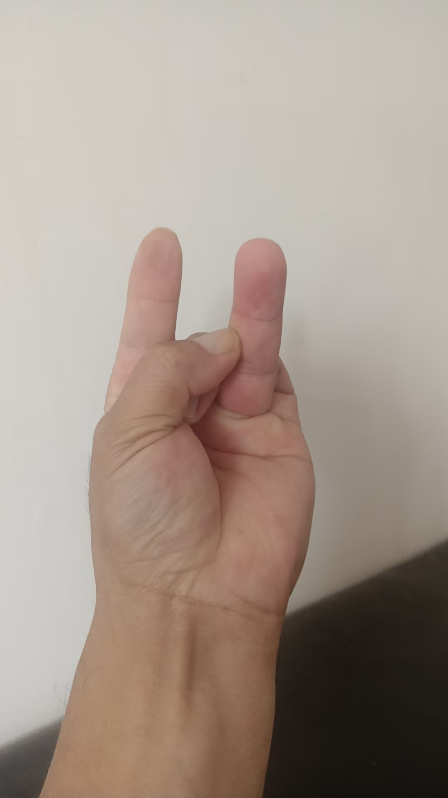
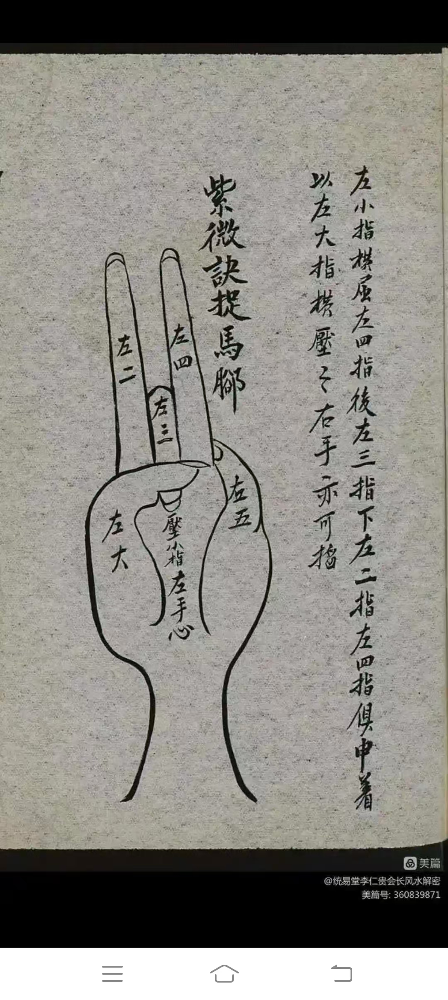
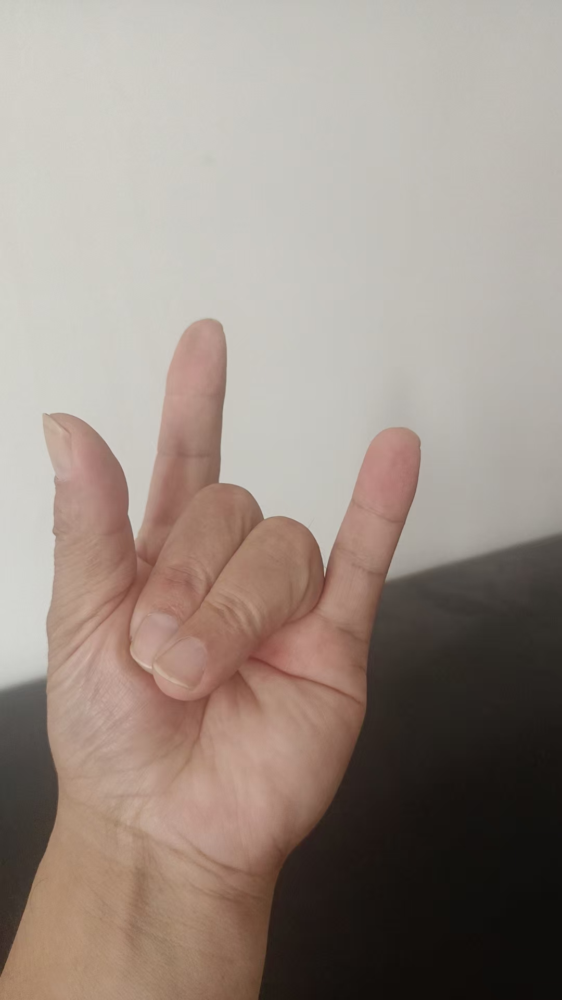
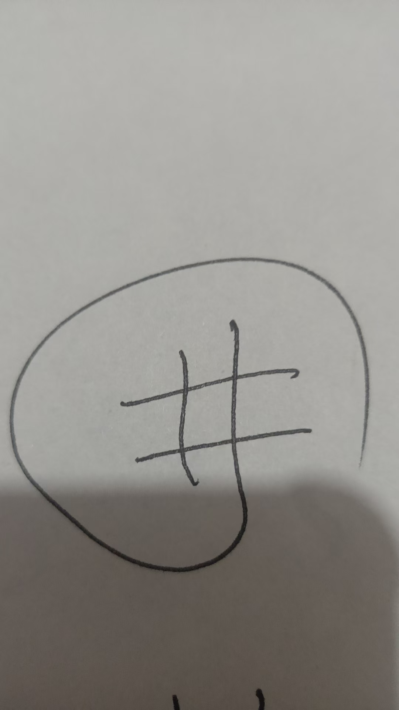
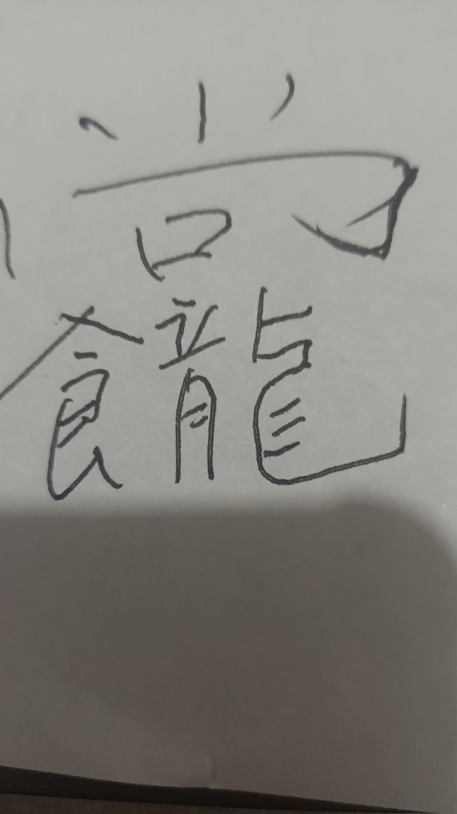

紫薇讳 紫鸢真人 28星宿 祝由术
二十八星宿是中国古代天文学的重要概念，将黄道附近的恒星划分为28组，用于观测日月五星的运行。以下是它们的名称，按四方（东、北、西、南）和七宿分组排列：
东方青龙七宿（春）
1. 角宿（Jiǎo）
2. 亢宿（Kàng）
3. 氐宿（Dī）
4. 房宿（Fáng）
5. 心宿（Xīn）
6. 尾宿（Wěi）
7. 箕宿（Jī）
北方玄武七宿（冬）
8. 斗宿（Dǒu）
9. 牛宿（Niú）
10. 女宿（Nǚ）
11. 虚宿（Xū）
12. 危宿（Wēi）
13. 室宿（Shì）
14. 壁宿（Bì）
西方白虎七宿（秋）
15. 奎宿（Kuí）
16. 娄宿（Lóu）
17. 胃宿（Wèi）
18. 昴宿（Mǎo）
19. 毕宿（Bì）
20. 觜宿（Zī）
21. 参宿（Shēn）
南方朱雀七宿（夏）
22. 井宿（Jǐng）
23. 鬼宿（Guǐ）
24. 柳宿（Liǔ）
25. 星宿（Xīng）
26. 张宿（Zhāng）
27. 翼宿（Yì）
28. 轸宿（Zhěn）
特点：
四象对应：每七宿对应一种神话灵兽（青龙、玄武、白虎、朱雀），象征四季。
星官体系：每组星宿包含多颗恒星，如“心宿”包含著名的心宿二（天蝎座α，古代称“大火星”）。
文化影响：广泛应用于历法、占星、风水等领域，如“昴宿”在日本文化中称“Subaru”（昴）。
如果需要更详细的星官名称或天文位置，可以进一步补充说明！ 🌟
以前，在温州，玄武桩法传人那里，见到紫薇讳
手诀，咒语，符字，结合一体
现在又见到了
厉害厉害
发上来，牢记

紫薇诀

紫薇水法
一杯阴阳水，就是提前准备好的雨水。
左手三山诀

托住水碗，念咒七遍，右手剑指，画紫薇讳一遍
咒，化形灾减，施法秘气，心清章至，引咒炼丹，升方安神，引药气入，百病消除，吾奉太上老君急急如律令。敕
2，剑指直接指患处，边念边画紫薇讳
咒，霹雳腾空过，煞动鬼神惊。道法本无多，南辰贯北河。只用一个字，降尽世间魔，开天门，闭地户，留人门，塞鬼路，穿鬼心，破鬼肚，人来有路，鬼来无门，吾奉真武祖师急急如律令
3紫薇讳画法
咒，头上青云盖，左边3点金，车动龙神现，斤字斩妖精，耳听雷声响，万吓化为尘，吾奉太上老君急急如律令。驱走邪妖精

然后一遍画，一笔一个星宿，正好二十八星宿画完
角亢氐房心尾箕，斗牛女虚危室壁，奎娄胃卯笔毕觜参，井鬼柳星张翼轸
@嘉寧 祝由噀水，就是喷在病人病患处
阴阳水，就是提前备好的雨水，不能喝
可以接自来水，用那个五龙水咒也行
紫薇讳 就是紫薇大帝名号
这样，一整套搞出来，人家是不是觉得法师很有一套
紫薇星，就是北极星
借用大帝的能量治疗各种疾病
紫薇大帝掌管二十八星宿
咒要背熟练
道教符字治病，祝由符字治病，是咱们法师实战中应该具备的。
我隔几天发一个，牢记在心，学一个会一个，这样就能使用了，发多了只去收藏资料，没用
神仙一把抓
也就是现在说的抓病气
咒，仙人神掌世间少，根苗出在蓬莱岛，元始祖师他最灵，用在手掌无价宝，治病不用丸散药，神仙一抓百病好
用右手掌放在病患处，不管是结节还是肿瘤，念动咒语一遍，然后观想把灰黑的病气抓出来，甩出去，并做出动作，反复七遍
现在的超能小孩，真能抓走肿瘤
九龙化骨水，三山印拿清水一碗，用剑指在水中逆时针画圈，同时念咒念完以后，剑指在水中画井字，再往水中画祝由符字


后边这个符字写七遍，剑指在水上写
咒，九龙水，九龙水，九龙似海水，是钢化成泥，是铁化成水，吾奉太上老君急急如律令
让卡刺的人一口喝下